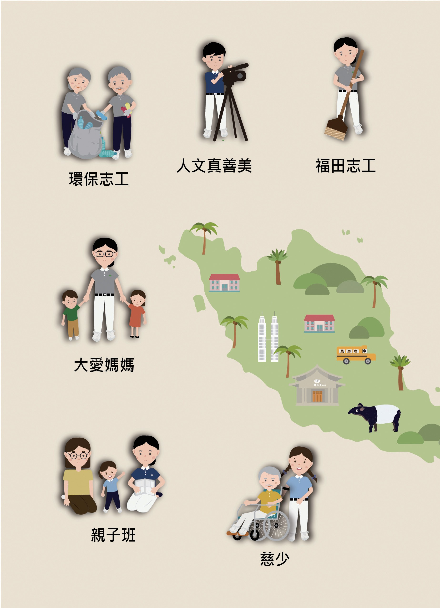
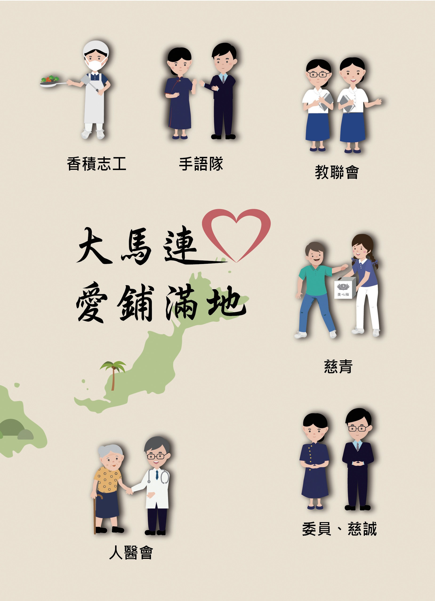

編輯後記
這兩本書，每一篇都沒有寫作者的名字，為什麼？

先別急著下結論，讀完再說說你的想法～
這是全書的最後一篇，由編輯團隊寫給讀者。
他們說了寫這部歷史有多難、怎樣讓人人都能參與，還有書末那兩頁畫滿志工的圖。
下面是原書的節錄，紅色底線是我們替你標出的轉折點。
讀之前：一本歷史書，你覺得該由誰來寫？
有心就不難
三十年的紀錄，要怎樣變成一本書？閱讀引導
感恩海外人文真善美志工，從記錄到撰寫，從照相到錄影，留住美善足跡。
雪隆慈濟三十年的紀錄，量多而豐實。但要將片段的記載、行政檔案，整理成結構完整的文章，在在考驗著我們的能力。尤其許多志工與同仁，都不曾參與當時的過程；即使有經歷過，也都隨著年歲而模糊，如何喚醒記憶？

要怎麼寫呢？
每一篇章都有著近百筆的史料，如何綴字成文？
……等等，透過工作坊，讓人人都能參與史藏的撰寫。
是大家一起寫！
上人常說：「有心就不難。」我們都不是專業的寫手，但是透過兩地同仁與志工的用心誠意，細細回溯過往，雖仍未臻理想，但終於將《雪隆慈濟史》出版。
接棒，前進
一本書，送給前人，也送給後人。閱讀引導
猜一猜閱讀引導
這兩本書的每一篇文章，都沒有標示作者。你猜是為什麼？
正如慈濟志業的每一步開展，都是合和互協的成果。

都要大家一起來。
僅以此書向資深的慈濟人致敬，也對後人說一聲「接棒，前進！」

也是「後人」喔！
大馬連心，愛鋪滿地
書末兩頁，畫滿了各種慈濟人。閱讀引導


做回收的，都畫進來了！


一起回頭看看吧～
回望
依本章原文整理，每一條都標了原書頁碼。閱讀引導
背後原因
這部歷史怎樣寫成

小川記憶模糊、史料又多，這兩本書是怎樣寫出來的？
- 史料很多
每一篇章都有近百筆的史料。p.915
- 主題概念化
把每個主題分成幾個方向來寫。p.915
- 工作坊
讓人人都能參與撰寫。p.915
寫進歷史的人
書末兩頁畫了哪些慈濟人

小禾這些志工，你在兩冊書裡讀到過哪幾種？
- 第一圈環保志工
把回收物分類，讓垃圾變黃金。p.917
- 第二圈人文真善美
拍照、錄影、寫文字，留下歷史。p.917
- 第三圈大愛媽媽
走進校園，陪孩子學靜思語。p.917
- 第四圈香積志工
煮熱食、做便當，送到需要的人手中。p.918
- 第五圈人醫會
醫師、護士一起去義診。p.918
- 第六圈委員、慈誠
承擔慈濟事，帶動大家一起做。p.918
以上只整理本章寫到的事；書裡沒寫到的，我們不替它下結論。
回頭看讀前的選擇閱讀引導
很多志工和同仁都不曾參與當時的過程（p.915），編輯團隊就把每個主題概念化，透過工作坊讓人人都能參與（p.915）。這部歷史，是做過的人和許多人一起寫出來的。
雪隆慈濟會寫下什麼故事？
只有你自己看得到喔！
謝謝你一路陪我們讀～